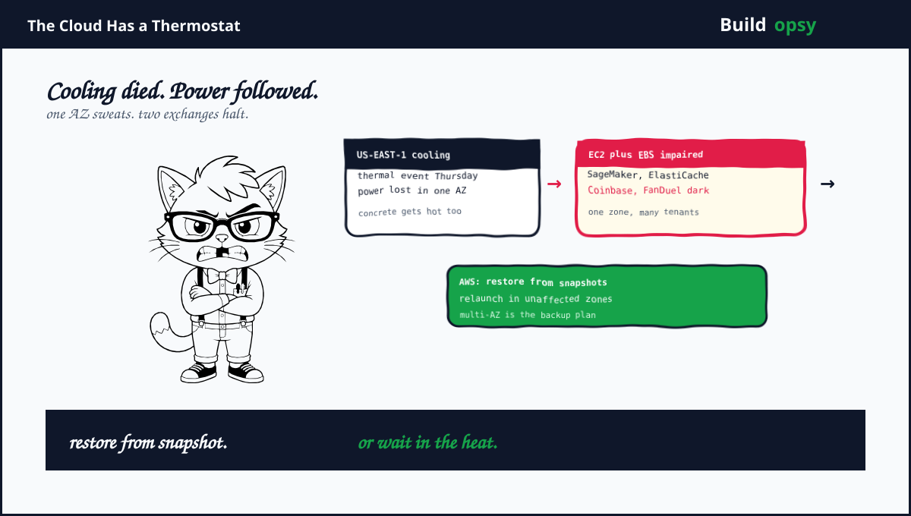

1. The Hottest Zone in Virginia
Thursday evening. US-EAST-1, the busiest AWS region on earth. A cooling failure in one Availability Zone pushed hardware past thermal limits. Power dropped to protect the building. AWS phrased it precisely. Instance impairments increased within the affected zone during a loss of power in a thermal event. Translation: servers went dark to save the structure around them.
The impaired list kept growing. EC2 instances plus EBS volumes first. Then Redshift, SageMaker, ElastiCache, IoT Core, EKS, NAT Gateway plus OpenSearch. Eight services from one zone's air conditioning. Power returned to a subset of infrastructure within hours. Full recovery lagged into Friday morning for EC2, EBS, SageMaker, ElastiCache plus OpenSearch. Coinbase halted exchange functions for hours. FanDuel went dark plus resumed. One zone's thermostat moved two public companies.
2. Why Heat Beats Software
Software failures are debuggable. Thermal failures are physical. When cooling dies, temperature rises on a curve nobody negotiates with. Breakers trip. Hardware protects itself by refusing to run. No deploy can fix a room that is too hot for silicon. No rollback cools concrete. The failure domain here is thermodynamics. Thermodynamics does not accept feature flags.
The impaired-versus-lost distinction matters for recovery math. Impaired EC2 plus EBS means the resources exist but cannot serve. AWS guidance split cleanly. Restore from EBS snapshots. Replace affected resources by launching in unaffected zones. Both paths assume the customer did homework before Thursday. Snapshots must exist, must be recent, plus must be tested. Launch templates must target multiple zones. If either assumption is missing, the guidance reads like a recipe demanding ingredients nobody bought.
Model the snapshot path. A 1 TB EBS volume restores at roughly the speed of the snapshot service plus first-touch latency on restored blocks. Lazy loading means the volume is usable before every block arrives, but database workloads touch blocks randomly, so effective recovery stretches for hours on large data sets. A fleet of 50 such volumes restores in parallel only if snapshot throughput plus instance limits allow it. Nobody had practiced this at 2 a.m. Practice is the whole game.
The multi-AZ math is simpler than teams pretend. Stateless compute across zones costs roughly 2x for two zones, minus reserved-instance discounts. Managed data services with synchronous replication carry a similar premium. Against that, price one incident like this one. Hours of impaired primary plus engineering overtime plus customer credits plus status page theater. For Coinbase-scale revenue per hour, multi-AZ pays for itself in a single evening. The bill is hiding in the zone you skipped.
4. What Went Wrong in the Design
Single-AZ deployment treated as temporary. Temporary single-zone architectures have a way of becoming permanent. Every quarter they survive feels like validation. Then a thermal event collects the debt with interest. Zones are the unit of failure. Deploying to one zone is deploying to one point of failure.
Snapshots existed but recovery was unrehearsed. Most teams back up. Few restore on a schedule. An untested snapshot is a rumor of safety. Restore drills expose the real numbers: throughput limits, first-touch latency, ordering constraints plus the three manual steps the runbook forgot.
Managed services hid the blast radius. Eight services impaired from one zone's cooling. Customers of SageMaker plus ElastiCache rarely map those services to physical zones. Abstraction is wonderful until the abstraction shares a thermostat. Know which zone your managed service lives in, or accept surprise tenancy.
Failover needed humans at machine speed. Guidance said relaunch in healthy zones. Relaunching stateful systems means promotion decisions, DNS changes, plus consistency checks. Manual failover during an active incident is slow plus error-prone. Automation rehearsed quarterly beats heroics performed never.
5. What Should Happen Instead
First, run production across at least two zones with traffic live in both. Active-active removes the failover step entirely. Active-passive keeps a cold path that rots. The cost delta is the cheapest insurance in cloud architecture. Pay it before Thursday, not after.
Second, drill snapshot restores quarterly. Restore a full data tier into an isolated VPC. Time it. Record block-warmup behavior under production query patterns. The drill output is two numbers leadership understands. Recovery time plus recovery cost. Everything else is commentary.
Third, map every managed service to its zones. Inventory which AZ each dependency occupies. Alert when a single zone hosts a critical path without a tested alternate. The map takes an afternoon. The incident it prevents takes a quarter to explain.
Fourth, automate promotion plus traffic shifts. Database failover, DNS updates, plus health-gated rollouts should run from playbooks, not from memory. Test them against a real zone evacuation drill. Humans approve. Machines execute. Never the reverse during an outage.
Fifth, keep launch capacity warm elsewhere. Relaunching in healthy zones assumes capacity plus quotas plus AMIs exist there. Pre-warm machine images, reserve quota headroom, plus keep infrastructure code deployable to every zone by default. Recovery should be a command, not a project.
6. The Verdict
AWS communicated clearly within the limits of an active incident. The status language was precise. The guidance was correct. Restore plus relaunch is genuinely the right advice. The uncomfortable part is that the advice only works for customers who prepared. The cloud gives you zones. Using one of them is a choice. Thursday priced that choice in public.
This was also AWS's second rough chapter of 2026 in US-EAST-1 after a 28-hour outage earlier in the year, plus reported drone damage to Middle East facilities in March. A hard year for concrete. The lesson for everyone else stays constant across causes. Cooling, power, fiber cuts, bad deploys, plus geopolitics all converge on the same design answer. Spread the blast radius before physics spreads it for you.
Cooling failed. Power followed. The snapshot was the only server that stayed cool.
Sources and Method
This postmortem follows the AWS status report plus CRN coverage of the US-EAST-1 thermal event. Recovery math is modeled from public EBS snapshot behavior. A full vendor postmortem is pending.